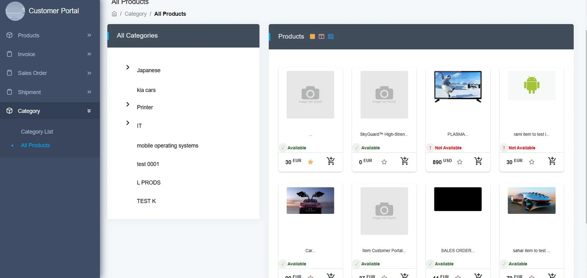
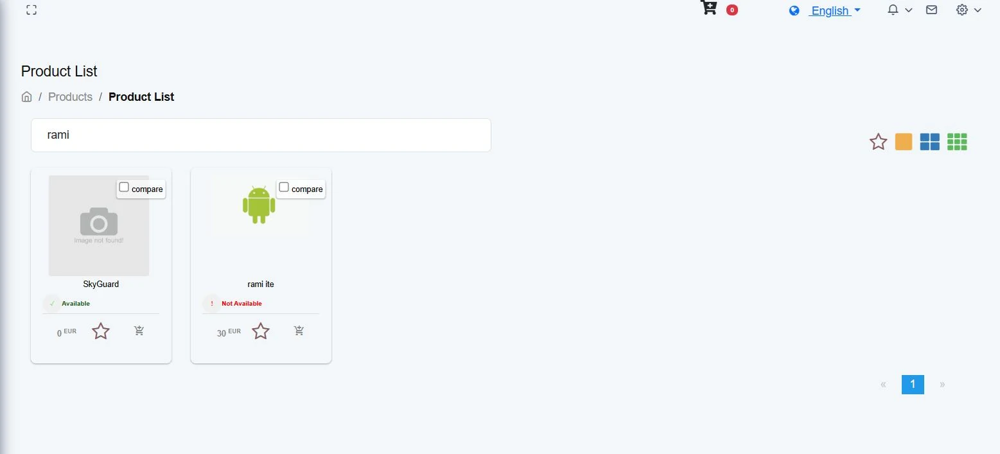
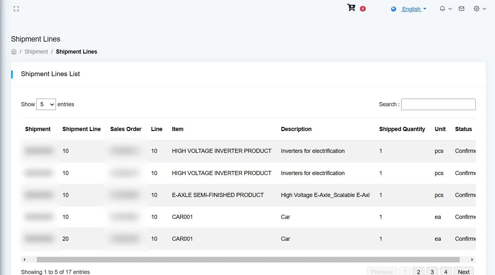
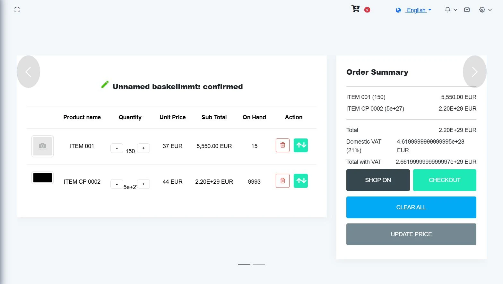
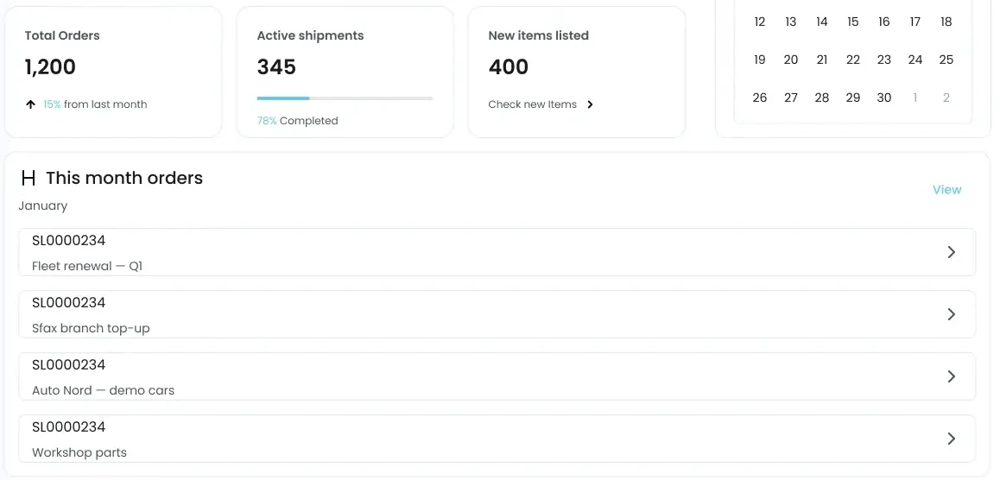
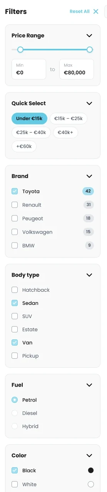
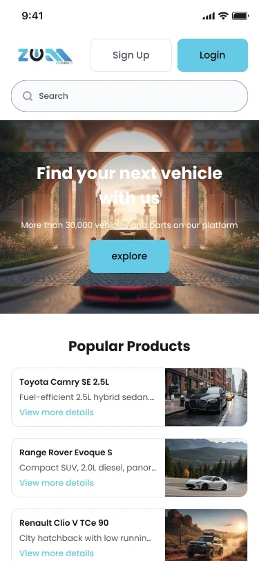

ZUM-IT · B2B ordering portal · case 1 of 3
ZUMConnect
A website where business customers order and track deliveries, connected to the company’s main business software (Infor LN, an ERP). I turned a slow, confusing portal into simple ordering, as one product that every client sets up for itself.
- My role
- Product Designer (UI/UX)
- Worked with
- A Business Analyst and the dev team
- Timeline
- Since Dec 2024
- Status
- Live, 2 clients

In 30 seconds
- The problem
- A template portal with raw ERP data on every page and a checkout total of 2.20E+29 EUR.
- Who it is for
- Sales staff and factory-floor workers who want to place an order and get back to work.
- What I did
- I reviewed 12 sections in writing, then rebuilt the portal one part at a time, so sales never stopped.
- The key decision
- One product for every client: each feature is built once, and every client turns on only what it needs (I call it the "flexible screen").
- The result
- Live on the Infor LN Marketplace with 2 clients. A new client onboards in about four working sessions.
Outcome
- Live
- In the Infor LN Marketplace
- 2
- Clients on one product, each under its own brand
- 30+
- Active users across the 2 client companies
- ~4
- Working sessions to onboard a new client
- Not measured
- Support volume, task time and conversion before vs after
Setting up a new client is now a short configuration talk, not a design project: their colours and logo plus the features they need. The product is still growing and I keep adding to it.
Real counts only. Task time and conversion were not tracked before and after, so no improvement percentage is claimed.
Evidence at a glance
- Status
- Live on the Infor LN Marketplace, used by 2 clients
- Team
- Only designer in a Scrum team: 4+ developers, QA, a business analyst, the PO
- My role
- Product Designer (UI/UX): review of the old portal, user flows, design system, specifications for developers, checking the build
- What is validated
- In production with 2 client companies and 30+ active users. A new client onboards in about 4 working sessions. Checked through client feedback and the Jira tickets we solve after each release: most are functional bugs, not UX or UI issues. That is a ticket review, not a formal usability test.
- What is not measured
- Task time, conversion and support volume before vs after
What I found
Before asking to rebuild anything, I wrote an audit of 12 sections of the live portal. These are the real screens as I found them (order numbers and partner names blurred).







What I put to the business
The business chose Method 2. Four decisions followed.
What I got wrong first
At the start, I designed features the way Infor LN shows them: same fields, same order, same ERP words. It felt safe because it matched the system. Then I stepped back and asked who actually uses the portal. Not ERP experts: floor workers, managers, and buyers who log in to check an order.
So I changed the rule. Every new feature starts from what that user group needs to do, in their own words, with the ERP detail one click away. I design for the least patient user, because if it works for them, it works for everyone.
Four decisions
Rebuild, but ship it module by module
- My call
- Rebuild instead of patching, and ship clean modules every sprint instead of one big launch.
- Why
- The template caused the mess. Patching would have locked it in, and the business could not stop selling.

One build for every client: the flexible screen
- My call
- Every feature lives in one system, and each client switches on what it uses.
- Why
- A version per client forks the product. One fixed release ships features nobody asked for.
- What makes it work
- The design system: a new client is its own colours and logo plus the features it chose, not a new design. See how it is built.

Build what the product needs, not every one-off request
- My call
- Separate what the product must be able to do from the way one client asked for it.
- Why
- One-off requests were fragmenting a product that has to work for every kind of business.

Business speed and UX quality, both
- My call
- A review loop for each part: I walk the developers through the design, they build it, and I check their build before release.
- Why
- The business wanted it running. The loop kept quality without slowing them down.


The design system behind it
The flexible screen only works because of the design system. Every client runs the same screens. What changes is a theme and a list of modules. I built the system from scratch in Figma and I maintain it.
How the design tokens are organised (the named colours, sizes and spacing that design and code share)
- Base scales. Greys from 50 to 400, spacing of 8, 12, 16, 24 and 32, radius of 8, 12, 24 and full, one type scale in Poppins.
- Roles on top. Text primary and secondary, page and elevated backgrounds, the default border, the brand colours, and a status family where every colour has its own light background (success, warning, info, error).
- Components use roles, never fixed values. Buttons, inputs, cards and tables are built from roles, so changing a client’s colours updates every screen at once.
One rule keeps it small: no new token for a one-off. A value off the scale uses the closest existing token, and a real gap is logged for later. The file is built from small parts up (atomic design): foundations, basic elements, combined components, full sections, mobile and guidelines.
What a client's setup contains
- Banner
- Popular products
- Our products
- FAQ
- Contact
In the flexible screen, each section is a settings card with a Visible tag. A banner, for example, is an image or a product, a single banner or a carousel of 3 to 5 slides, on this page only or on every page that has a banner slot. Desktop and mobile are set separately, and every field a client can retype has a language selector.
The same screen, two clients
Illustration of the theming, with two made-up brands, not real clients. Same components and the same layout: only the theme and the modules change.
How the developers use it
- Every value is a Figma variable, and I use the same names as the developers, so the design and the code always match.
- Screens are grouped by flow under a page header, with a short user story next to each screen and every state designed: empty, loading, error, very long data.
- Before a release, I check the build against the design system and log every difference as a ticket.
Who did what
| Research (audit of the template) | Me |
|---|---|
| Problem framing | Me, with the PO |
| Prioritisation | The PO decides, I propose |
| UI and flows | Me |
| Design system | Me |
| Specs and design QA | Me, with QA |
| Build | 4+ developers |